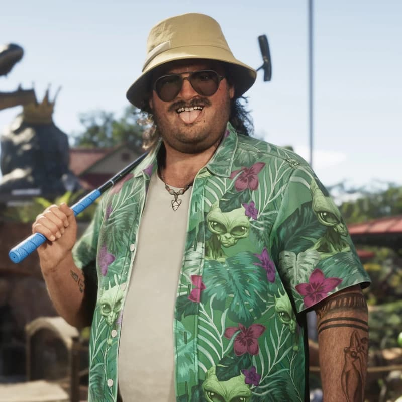
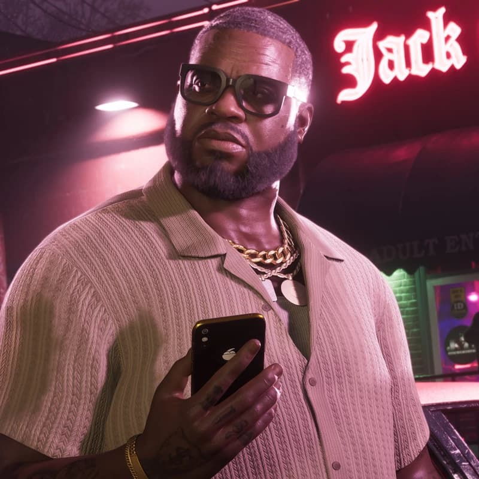
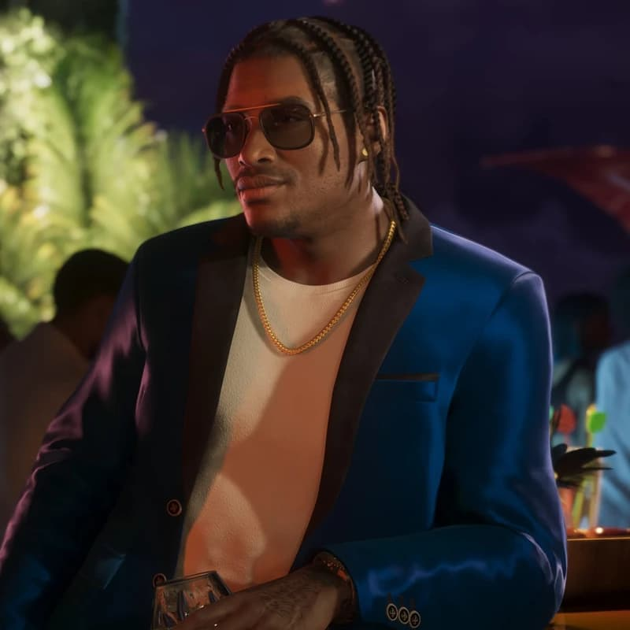
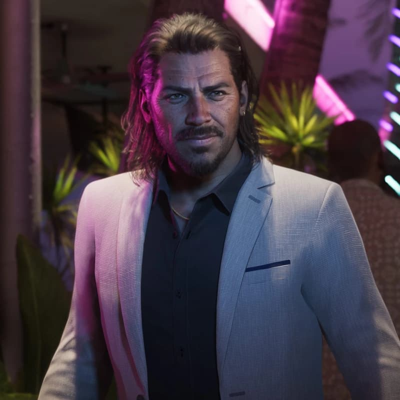
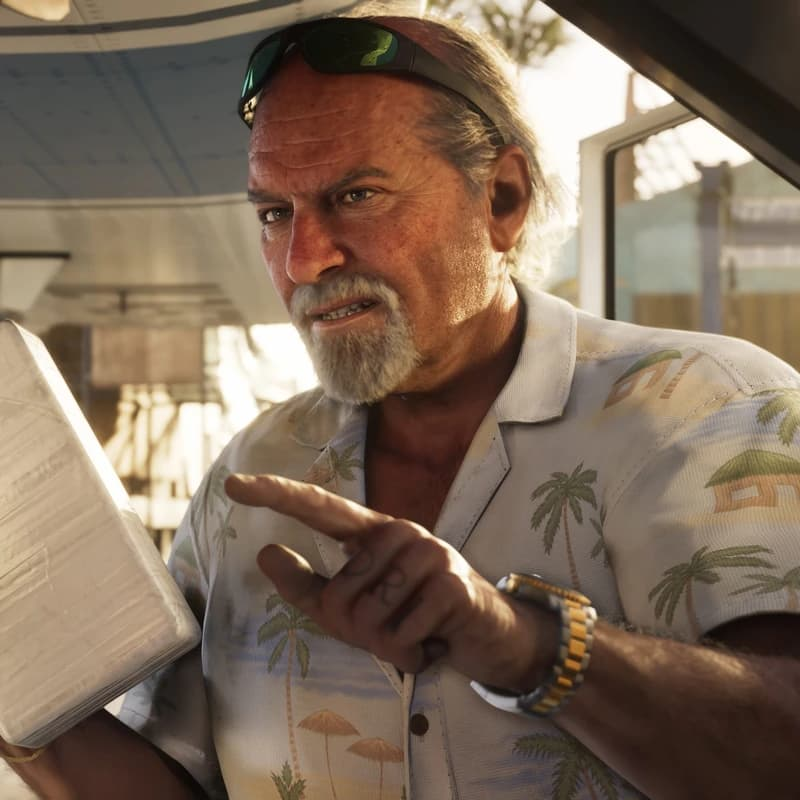
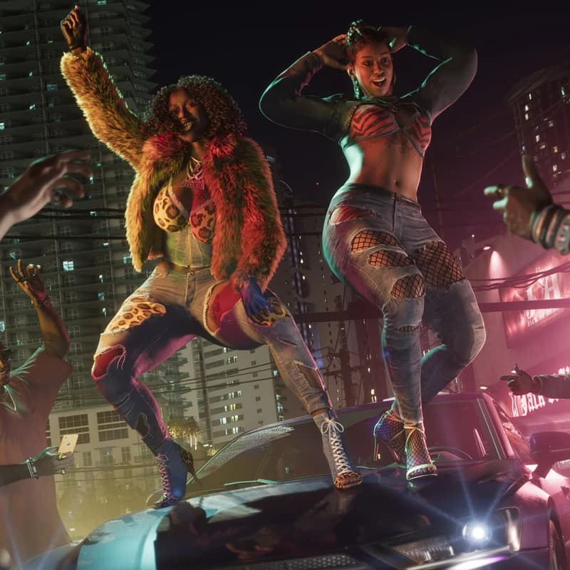

Люди Леониды
Персонажи Grand Theft Auto VI
Джейсон Дюваль и Люсия Каминос — два главных героя истории об отношениях, общих решениях и событиях в штате Леонида. Впервые в современной истории Rockstar Games центральное место занимает женский игровой персонаж.
Главные персонажи
-

Джейсон Дюваль (Jason Duval)
Джейсон вырос среди мошенников и преступников. В молодости он служил в армии, пытаясь оставить позади непростое прошлое. Позже оказался в Леонида-Кис, где начал работать на местных наркоторговцев. Он мечтает о спокойной и обеспеченной жизни, но обстоятельства постоянно усложняют его планы. Знакомство с Люсией может стать для него как лучшим, так и худшим событием в жизни.
-

Люсия Каминос (Lucia Caminos)
Отец с детства учил Люсию драться и защищать себя. Желание помочь семье привело её в исправительное учреждение Леонида, откуда ей удалось выбраться благодаря удаче. Теперь Люсия хочет изменить свою жизнь и добиться благополучия, о котором мечтала её мать. Ради своей цели она готова действовать самостоятельно.
Другие важные персонажи
-

Кэл Хэмптон (Cal Hampton)
Кэл — друг Джейсона и знакомый Брайана. Он предпочитает проводить время дома, изучая радиопереговоры береговой охраны и занимаясь своими делами в интернете. Спокойная и немного замкнутая жизнь его вполне устраивает.
-

Буби Айк (Boobie Ike)
Буби — известная личность Вайс-Сити. Он превратил своё уличное прошлое в бизнес-империю с недвижимостью, ночным клубом и музыкальной студией. Буби умеет производить приятное впечатление, но к делам относится серьёзно.
-

Дре'Куан Прист (Dre'Quan Priest)
Дре'Куан всегда хотел попасть в музыкальную индустрию. Даже когда ему приходилось заниматься уличной торговлей ради заработка, его главной целью оставалась музыка. Он связан с лейблом Only Raw Records.
-

Рауль Баутиста (Raul Bautista)
Рауль — опытный грабитель банков, который ищет людей, готовых рискнуть ради крупной награды. Он уверен в себе, обаятелен и хитёр, а ещё умеет находить подходящих людей для своих планов.
-

Брайан Хедер (Brian Heder)
Брайан давно участвует в контрабандном бизнесе Леонида-Кис и перевозит запрещённые товары через собственную лодочную верфь. Он предпочитает поручать грязную работу другим.
-

Бэй-Люкс и Рокси (Real Dimez)
Две подруги, знакомые ещё со школы, превратили свою активность в интернете и музыкальные способности в способ заработка. После успешного сингла с местным рэпером DWNPLY дуэт подписал контракт с Only Raw Records и надеется повторить прежний успех.